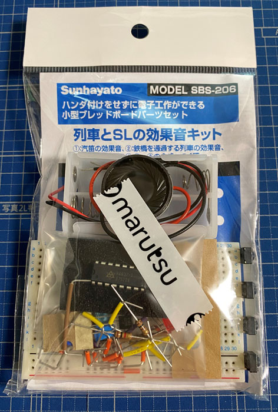
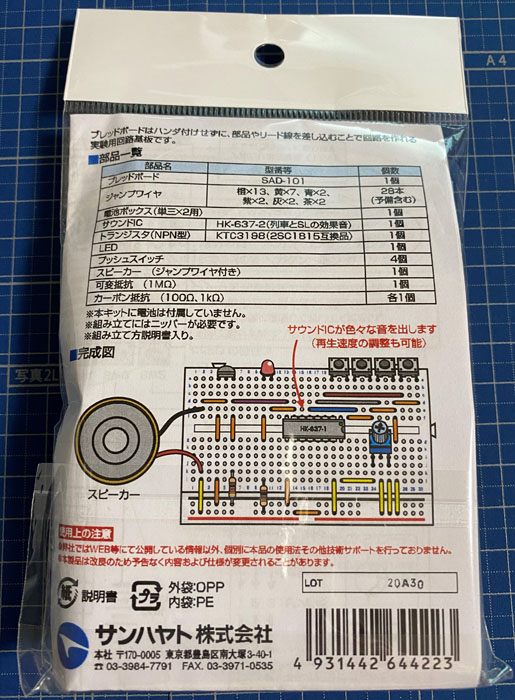
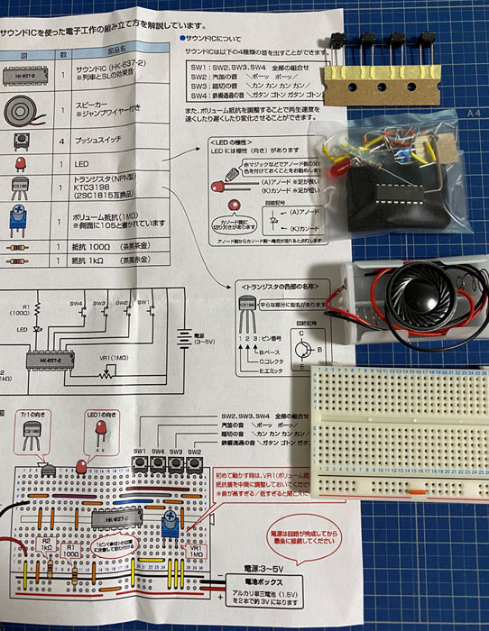
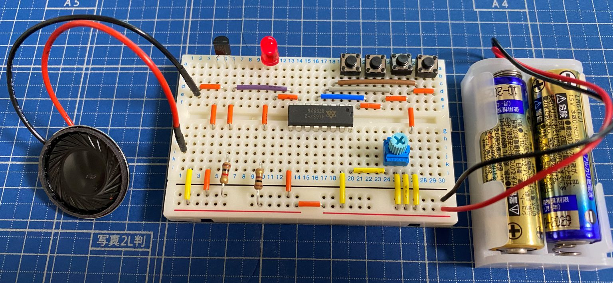

Model SBS-206 열차와 SL의 교환음 키트 만들기
Model SBS-206 열차와 SL의 교환음 키트 만들기
안녕하세요.
이번에 소개할 내용은 Model SBS-206 열차와 SL의 교환음 키트 만들기 입니다.
아키하바라에서 세금포함 1749엔에 전자 공작 키트를 구매를 해보았습니다.
구성품은 아래와 같습니다.

이런 비닐안에 필요한 부품이 모두 들어 있습니다.
조립만 하면 바로 쓸수있게 회로도 설계도 들어가 있기에 누구나 쉽고 빠르게
전자 공작을 하실수 있습니다.
좀 아쉬운것은 생각보다 비싸다는점이에요…

뒷면에는 부품갯수와 간략한 회로도를 볼수 있습니다.

전체적인 부품과 설계도는 위와 같습니다.
부품이 생각보다 많아보이지만 대부분이 점퍼케이블이기에
하나하나 연결을 하다보면 어느센가 끝나있습니다.
플레이트 보드에도 번호와 알파벳이 적혀져 있으므로 설계도와 맞춰서 연결을 할수가 있습니다.
라즈베리파이 처럼 코딩을 하실 필요없이 연결만 하면 끝납니다.

전체적으로 조립이 완료된 상태입니다.
버튼을 누르면 버튼에 따라서 스피커로 기차음을 들을수가 있습니다만
무슨문제인지 LED는 불이 잘 들어오지만 스피커에서 소리가 안나옵니다.
불량인것인지… ㅠㅠ
여러분도 이런 키트를 구매를 하실때는 교환등 따져보고 구매를 하세요.